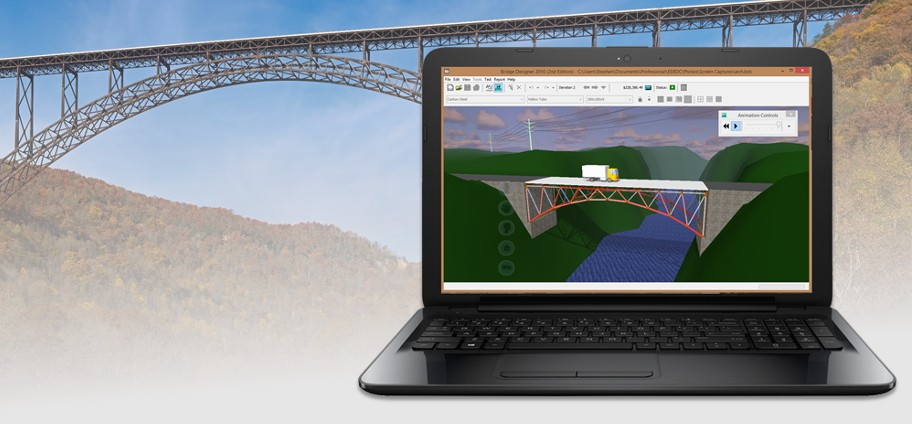

1. Programa Bridge Designer¶


El programa para diseño de puentes "Bridge Designer" proporciona una introducción práctica a la ingeniería a través de una experiencia de diseño auténtica y realista.
Este software proporciona las herramientas para diseñar, probar y optimizar un puente de acero para autopista, basado en especificaciones, restricciones y criterios de rendimiento realistas.
Uno de los objetivos del programa es minimizar la cantidad de material utilizada en la construcción, como corresponde a un criterio ecológico.
The Bridge Designer es un software para Windows y Mac OS X, gratuito y de dominio público. Se proporciona y está destinado únicamente para uso educativo.